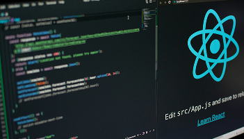

2024/10/11
React入門不再迷惘：三步驟帶你上手核心概念
你是否對React感到好奇，卻苦惱於該如何正式啟動學習之路？身為前端工程師及職涯諮詢師，我常遇到同學問...
閱讀內文

2024/09/07
前端作品集打造指南：讓你的專案成為履歷亮點
對正在求職的前端工程師而言，作品集往往是第一個「說話」的利器。當面試官瀏覽你的網頁作品時，能夠快速了...
閱讀內文

2024/09/03
CSS 魔法大揭密：排版與設計的三大關鍵技巧
在瀏覽器畫面上實現各種精美介面，一直是前端開發充滿成就感的部分。但當面臨複雜的佈局需求或是響應式設計時，...
閱讀內文

2024/07/09
前端轉職必讀：從自學者到工程師的心路歷程
能夠憑藉自學進入前端領域，聽起來令人振奮，但實際過程中可能遇到的挫折與疑慮，卻常常令人猶豫一些...
閱讀內文

2024/07/08
前端面試不再慌：破解常見提問的三大策略
面試前端工程師時，你或許擔心被問到各種刁鑽的技術題目，或是擔憂無法在短時間內展現實力。其實，許多面試...
閱讀內文

2024/06/29
Vue 3 新手指南：快速掌握 Composition API 與關鍵特色
許多前端開發者對 Vue 一直情有獨鍾，因為它易上手又靈活。隨著 Vue 3 上線，Composition API 的導入更是大幅...
閱讀內文

2024/05/04
Git 與版本控制：前端協作的必修課
當你從一人開發晉升到多人合作，版本控制的好壞往往決定了專案的順暢度。Git 不僅能記錄程式碼變動，更能確保...
閱讀內文

2024/05/01
SEO 與前端最佳實踐：讓搜尋引擎看見你的網站
即使你的網站擁有優美的介面與強大的功能，如果在搜尋引擎上找不到它，那就形同隱形。身為前端工程師，瞭解基...
閱讀內文

2024/02/17
穩定前端環境的祕訣：依賴管理與自動化流程
前端世界日新月異，第三方套件與工具種類繁多，一個不留神就可能引爆依賴衝突。為了確保專案長期維護的穩定...
閱讀內文

2024/02/17
TypeScript 快速上手：強化前端程式碼的安全與可讀性
許多前端開發者在成長過程中都曾面臨動態語言帶來的錯誤風險，而 TypeScript 的出現正是為了改善這種情況。它...
閱讀內文

2024/02/07
掌握前端測試：從單元測試到端對端測試的完整攻略
寫程式容易，但要確保程式在多種情境、裝置都能正常運行就沒那麼簡單了。這時「測試」便成了維持程式品質的...
閱讀內文